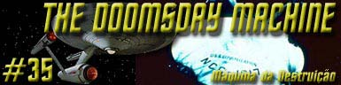
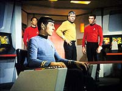
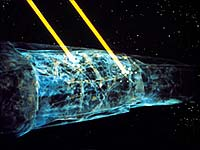
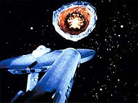
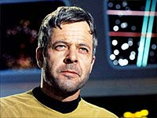
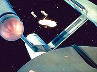
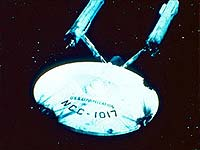
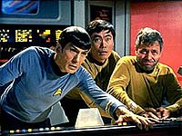

|
Série
Clássica
Temporada 2

análise do episódio por
Carlos
Santos


| MANCHETE
DO episódio Data Estelar: 4202.9 Ao responder um sinal de socorro da USS Constellation a Enterprise encontra a nave da Frota Estelar emitindo um sinal automtico de socorro, deriva e seriamente avariada o sistema estelar L-374 totalmente destrudo, e nenhum sinal do que teria causado tal evento. Kirk vai a bordo da nave avariada levando McCoy, Scott e um grupo de manutenão e l encontra o interior da nave to avariado quanto e exterior parece mostrar, motores de dobra inutilizados, bancos fasers exauridos, mas sem nenhum sinal da tripulao, morta ou viva. Kirk cogita se eles poderiam estar em dos dois planetas sobreviventes do sistema, mas Spock informa quer nenhum dos dois fornece condies mínimas de suporte de vida.  O relatrio da equipe de Scott mostra que algo de muito poder conseguiu atravessar os escudos da nave, destruindo os geradores e desativando a antimatria do motor de dobra. Decker tenta descrever o tal entidade, que ele chama de demnio, uma enorme arma de destruio em escala planetria. Tal descrio confirmada por Spock, que a bordo da Enterprise concluiu atravs da analise dos dados da Constellation que está foi atacada por uma maquina automtica com incrvel poder. Ao mesmo tempo Spock informa que eles não conseguem mais entrar em contato com o comando da Frota devido a interferncias nas comunicaes, e que a projeo do curso de tal arma passa por dentro de territrio da Federao densamente povoado. Decker levado contra a vontade para Enterprise, enquanto Kirk permanece a bordo da Constellation, entretanto, assim que ele e McCoy chegam bordo o devorador de planetas, conforme a descrio do comodoro, reaparece e passa a perseguir a Enterprise. Spock tenta manter distncia informa Kirk o que pde descobrir sobre o devorador. Ele tenta baixar os escudos para levar o grupo de Kirk de volta, mas assim que os defletores so desativados a nave atacada, danificando os transportes e comunicao.  A bordo da Enterprise, Spock observa o devorador mudar de curo, passando a seguir na direo de Rigel, setor altamente populoso da Federao. Ciente da impossibilidade de confrontar o inimigo e sobreviver o primeiro oficial da Enterprise pretende manter distancia e retornar quando possível para resgatar Kirk e seu grupo. Decker protesta, e contra a recomendao de Spock e de McCoy assume o comando da Enterprise e ordena um ataque total ao devorador. Enquanto Kirk e Scott vo tentando fazer seus milagres a bordo da Constellation a Enterprise entra em alcance do devorador e atacada, e mais uma vez contra a recomendao de Spock que permanece em seu posto de primeiro oficial, Decker sustenta sua deciso. Kirk consegue consertar o visual externão bem a tempo de ver a aproximao de sua nave para enfrentar o devorador. Decker ordena fogo total, mas como era previsto, os danos ao inimigo so insignificantes.  Kirk consegue colocar a Constellation em movimento, e graas a mais um milagre de Scott disparar uma salva de fasers contra ela, chamando a atenção para si e permitindo que a Enterprise se afaste, mas Decker insiste em retornar a batalha. Spock insiste que ele deve abandonar a luta e tentar ultrapassar a interferncia que impede as comunicaes de longa distancia para avisar a frota sobre a maquina de destruio. A tenente de comunicaes consegue estabelecer contato com Kirk, e após muita insistncia deste Decker permite que ele fale com seu primeiro oficial. O capito fica enlouquecido ao saber que foi Decker quem ordenou o ataque e qual a situao da nave. Ela manda Sulu assumir posio defensiva, mas Decker quer retormar o ataque. Kirk manda que Spock assuma o comando, e Spock o faz, ameaando prender o comodoro se necessrio. Decker finalmente cede entregando o comando a Spock, que manda que Decker se apresente a enfermaria para exames mdicos e retorna para tentar resgatar Kirk. não caminho para a enfermaria, Decker ataca o segurana que o acompanhava, deixando-o desacordado e fugindo em direo ao hangar. Sem saber do acontecido Spock e Kirk combinam um ponto de encontro enquanto Scott continua tentando consertar o que pode abordo da Constellation. Decker rouba um shuttle antes que Spock possa impedi-lo, e planeja entrar com a pequena nave pela "boca" do devorador de planetas. Ele ignora os apelos de Spock e Kirk e segue com sua intenão original e logo após entrar não devorador a nave explode. Enquanto Kirk lamenta a perda do amigo, Sulu informa que após a exploso houve uma pequena queda nas leituras de energia do devorador de planetas. Apesar da queda ser mínima, o capito imagina que se repetir o plano de Decker usando a Constellation ao invs de um shuttle, a exploso possa destruir a arma. Com os transportes da Enterprise operando eles cevam de volta o pessoal de manuteno, deixando apenas Kirk e Scott a bordo da nave avariada. O engenheiro prepara a nave para explodir deixando trinta segundos de atraso para que este possa ser levado a bordo antes da detonao e também deixa a nave.  Na ponte os sensores informam que destruidor de planetas está fora de combate, destrudo. O plano funcionou, e a Enterprise retoma curso para uma base estelar prxima a fim de executar os reparos.
A partir de um roteiro claramente inspirado em Moby Dick, Norman Spinrad trouxe para o espao a saga do capito Ahab em busca de sua vingana, num roteiro que mistura ao, aventura, mistrio e suspense. O mais interessante que a premissa absolutamente simples, pois o conceito da "arma de destruio absoluta" um dos clichs dos filmes e/ou series de TV, principalmente quando se fala de ficção. Da mesma forma a historia de Moby Dick j inspirou diversas outras. S para ficar dentro da franquia podemos lembrar os bem-sucedidos "Jornada nas Estrelas II - A Ira de Khan", onde o personagem que d nome ao filme encontra a prpria morte na busca de vingana contra Kirk, e "Jornada nas Estrelas Primeiro Contato", onde Picard quase perde o controle frente aos Borgs.  Muito da qualidade de "The Doomsday Machine" vem da fora da interpretao de William Windom como Comodoro Decker, que perfeita. Ele comea com um angustiado oficial, abalado pela perda de sua tripulao, culpando a si mesmo por tal acontecimento, para logo depois dar lugar a um obstinado homem em busca de vingana e redenão pessoal, to cego pela vingana que não percebe que esta prestes a cometer o mesmo erro de antes. O que chama a atenção sobre Decker que ele poderia muito bem ser Kirk, um oficial de carreira experiente, eficiente e orgulhoso de seu comando, mas que agora tem conviver com o peso de uma deciso que mandou as pessoas sobre seu comando para a morte, assim como a Constellation a deriva não espao poderia bem ser a Enterprise. Tal lembrana além de reforar o clima de suspense do episodio traz uma saudvel lembrana que tanto a Enterprise quanto seu capito so falveis, um sentimentão muito bem vindo, pois desmistificar o heri trazendo a Consciência suas limitaes apenas tornam o feitos deste ainda mais hericos.  claro que sempre se sabe que Kirk e a Enterprise sobrevivero, mas a questão como, e a certa altura do segmentão fica muito difcil prever como nossos heris se livraro desta enrascada, pois fica claro que o inimigo não pode ser vencido por meios normais, o que exigira uma soluo fora do padro. Esta soluo final de uma elegncia mpar, pois se utiliza mais uma vez do drama humano para resolver o impasse. Decker ao tomar o explorador e se lanar numa tentativa intil de ataque contra sua Moby Dick completa seu destino, que para ele simplesmente morrer como seus homens e ao fazer isto d a Kirk por acaso a chave para vencer onde seu amigo havia falhado. até a morte do comodoro tudo o que a Enterprise pode fazer e tentar fugir e sobreviver, e nenhuma carta tirada da manga na ultima hora na forma de alguma frase proferida por algum com ar de autoridade em tecno-babble. O acaso, e apenas o acaso, tornou os destinos de Decker e Kirk diferentes, tal qual na vida real onde varias vezes o mesmo acaso pode reservar todo o tipo de surpresas. não que diz respeito ao elenco da Série, Spock e sua costumeira lgica e eficincia e McCoy completam mais uma participao marcante do grande trio, com destaque j citado para Scott, e para a tenente Palmers, que substitui Uhura e consegue passar uma impresso muito mais profissional do que a personagem de Nichelle Nichols j conseguiu. Justia seja feita, os eventos de "The Doomsday Machine" fazem com que a personagem um pouco mais o que fazer que Uhura normalmente tem. A mensagem subliminar sobre a produção de armas nucleares durante a Guerra Fria, se teve algum peso na época. Das exibies originais, se perdeu com tempo, mas o segmentão continua um dos mais poderosos da Série Clássica justamente por se estruturar a outros questes mais atemporais, como dever, honra, ascenso, queda vitria e fracasso e culpa.  também preciso usar da suspenso de descrena para não se perguntar se seria possível que tal arma, capaz de causar a destruio na escala em que mostrada não episodio vagasse pelo espao até chegar em territrio da Federao completamente sem avisão e sem que Ninguém mais fosse incomodado. Tudo bem que o espao um lugar grande, mas existem certos limites de bom senso. Mas nada disto suficiente para diminuir o brilho deste segmentão da Série Clássica, que com certeza merece ser revisto de vez em quando. A satisfao garantida.
Spock "Vulcans never bluff." Kirk "He gave his
life in an attempt to save others. Not the worst way to go." McCoy
"I'm a Doctor, not a mechanic." Spock "Random chance
seems to have operated in our favour."
Escrito
por Norman Spinrad Elenco: William
Windom como Comodoro Decker |